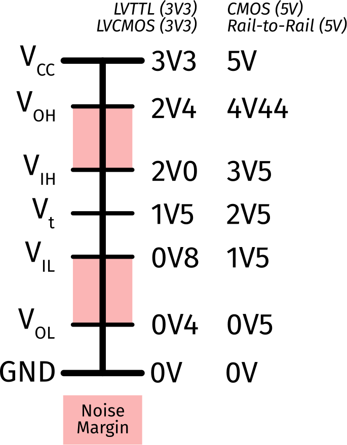

Pmod (Digilent) Connector Standard
The first peripherical module (Pmod) standard was released in 2011 by Digilent. The latest version is from 2020, and released by National Instruments, who acquired Digilent. They are designed to be a universal connector for modules to development or data acquisition boards. That are not plug-and-play, as they often require software or jumper configurations to work correctly.
Connector
The PMOD connector is based on the standard 0.100" (0.254mm) pin headers in either 6 or 12 pin configuration. There's a few other recurring themes:
- Both host and module ports are typically right-angle at the edge of the board.
- Host ports can be placed somewhere besides the edge of the board, in which case they are vertical.
- Right-angle connectors should protrude from the side of the board by at least 0.025" (0.635mm) to allow for a solid connection.
- Ports placed on the edge of the board should be on 0.9" (22.86mm) centers to allow for standardized modules to fit next to each other.
- If it makes sense, boards can daisy chain connectors. In this case, the connectors should be lined up axially on the board.
All of these are pretty normal connector designs, so they should be pretty easy to meet.
Alternative Connectors
In the specification, there's some discussion of being able to connect peripheral modules to the host via cables "up to 18 inches in length", and elsewhere, discussion of using RJ-45 connectors. None of these seem to be standardized in any way. To me, this isn't a PMOD connector any more, it's just I2C on a different wire.
Pin Numbering
The one thing that's a bit different is the pin numbering. The numbering is done from the perspective of the module, and not the host. The diagram below shows "head on" into the connector from the perspective of the other side.
This tripped me up quite a bit because I was thinking of the pins as being numbered from the host's perspective. I guess they figure since it's about modules, they'd number from that perspective.
Power Supply
On ever connector there are ground (GND) and power (VCC) pins. For 12-pin connectors, there are two of each. They are always the last two pins on the row. The "standard" requires that the host be able to provide either 5V or 3V3. For 12-pin connectors, both the VCC pins must be switched together and always supply identical voltages. Typically, you would do this by shorting them together at the host end.
Voltage Selection
While the standard has some information on this, it's really unclear how exactly you are supposed to switch between voltages. I imagine a jumper would be the most effective option.
Weirdly, there's no real firm standard on how much current you can draw from the connector, but there's this line in the specification:
The amount of power a peripheral module is allowed to draw from the host is not specified, but should not be assumed to be more than approximately 100mA.
Great spec there!
Configurations
There are 12 configurations of the PMOD connector standard in use. Each of them is targeted as a specific use case, but all use either the 6 or 12-pin connector physically. They are:
| Usage | Type | Connector |
|---|---|---|
| GPIO | 1 | 6 |
| Expanded GPIO | 1A | 12 |
| SPI | 2 | 6 |
| Expanded SPI | 2A | 12 |
| UART | 3 | 6 |
| Expanded UART | 3A | 12 |
| H-Bridge | 4 | 6 |
| Dual H-Bridge | 5 | 6 |
| Expanded dual H-bridge | 5A | 12 |
| I2C | 6 | 6 |
| Expanded I2C | 6A | 12 |
| I2S CODEC | 7 | 12 |
The "expanded" versions are typically additional signals that are optional, or the ability to add additional GPIO pins.
Active Low Signals
Some signals, like chip select in SPI, are active when they are pulled low. This is noted in the Signal by placing an overline on the signal like this: CS.
1: GPIO
All GPIO pins should be able to be input, output, or bidirectional. Other than pin 2, these are assumed to not be PWM.
| # | Use | Dir | Alt Use | Alt Dir | Notes |
|---|---|---|---|---|---|
| 1 | GPIO1 | I/O | - | - | |
| 2 | GPIO2 | I/O | PWM | O | |
| 3 | GPIO3 | I/O | - | - | |
| 4 | GPIO4 | I/O | - | - | |
| 5 | GND | - | - | - | |
| 6 | VCC | - | - | - |
1A: Expanded GPIO
All GPIO pins should be able to be input, output, or bidirectional. Other than pins 2 and 8, these are assumed to not be PWM.
| # | Use | Dir | Alt Use | Alt Dir | Notes |
|---|---|---|---|---|---|
| 1 | GPIO1 | I/O | - | - | |
| 2 | GPIO2 | I/O | PWM | O | |
| 3 | GPIO3 | I/O | - | - | |
| 4 | GPIO4 | I/O | - | - | |
| 5 | GND | - | - | - | |
| 6 | VCC | - | - | - | |
| 7 | GPIO5 | I/O | - | - | |
| 8 | GPIO6 | I/O | PWM | O | |
| 9 | GPIO7 | I/O | - | - | |
| 10 | GPIO8 | I/O | - | - | |
| 11 | GND | - | - | - | |
| 12 | VCC | - | - | - |
2: SPI
For SPI, the host acts as the controller, and the module is the peripheral.
| # | Use | Dir | Alt Use | Alt Dir | Notes |
|---|---|---|---|---|---|
| 1 | CS | O | - | - | Chip select |
| 2 | COPI | O | - | - | Controller out/peripheral in |
| 3 | CIPO | I | - | - | Controller in/peripheral out |
| 4 | SCK | O | - | - | Serial clock from controller |
| 5 | GND | - | - | - | |
| 6 | VCC | - | - | - |
SPI Terminology
The terminology used for SPI here, and elsewhere on this site, is different than the historical language. There's explanation as to why, but the summary is that it removes legacy inappropriate language.
2A: Expanded SPI
Similar to configuration 2, except that it provides additional chip select pins and an optional INT and RESET signal
| # | Use | Dir | Alt Use | Alt Dir | Notes |
|---|---|---|---|---|---|
| 1 | CS1 | O | - | - | Chip select #1 |
| 2 | COPI | O | - | - | Controller out/peripheral in |
| 3 | CIPO | I | - | - | Controller in/peripheral out |
| 4 | SCK | O | - | - | Serial clock |
| 5 | GND | - | - | - | |
| 6 | VCC | - | - | - | |
| 7 | GPIO1 | I/O | Interrupt (INT) from peripheral | I | |
| 8 | GPIO2 | I/O | RESET | O | |
| 9 | GPIO3 | I/O | CS2 | O | Chip select #2 |
| 10 | GPIO4 | I/O | CS3 | O | Chip select #3 |
| 11 | GND | - | - | - | |
| 12 | VCC | - | - | - |
3: UART
The UART configuration allows for optional hardware flow control, but otherwise assumes a full-duplex connection. When hardware flow control is implemented, it's done using RTS/CTS (see below). All these are done from the host perspective.
| # | Use | Dir | Alt Use | Alt Dir | Notes |
|---|---|---|---|---|---|
| 1 | CTS | I | GPIO | I/O | |
| 2 | TXD | O | - | - | |
| 3 | RXD | I | - | - | |
| 4 | RTS | O | GPIO | I/O | |
| 5 | GND | - | - | - | |
| 6 | VCC | - | - | - |
What is RTS/CTS?
RTS/CTS is a flow control hardware protocol for RS-232. In this version, RTS is an output pulled low to indicate that the device, either host or module, is ready to receive data (note: this should be called RTR, not RTS, but here we are with words meaning nothing). The CTS is an input to the device (again, either), and is an indication, when pulled low, that the device receiving it is able to send.
You should connect the host's CTS to the module's RTS, and vice versa.
Unlike RS-232, these are not done with +/- voltages, but instead the regular LVCMOS/LVTTL signaling.
3A: Expanded UART
Like configuration 3, this is just extra GPIO and the optional INT and RESET pins.
| # | Use | Dir | Alt Use | Alt Dir | Notes |
|---|---|---|---|---|---|
| 1 | CTS | I | GPIO | I/O | |
| 2 | TXD | O | - | - | |
| 3 | RXD | I | - | - | |
| 4 | RTS | O | GPIO | I/O | |
| 5 | GND | - | - | - | |
| 6 | VCC | - | - | - | |
| 7 | GPIO1 | I/O | Interrupt (INT) | I | From peripheral |
| 8 | GPIO2 | I/O | RESET | O | Host-initiated |
| 9 | GPIO3 | I/O | - | - | |
| 10 | GPIO4 | I/O | - | - | |
| 11 | GND | - | - | - | |
| 12 | VCC | - | - | - |
4: H-Bridge
Provides control of a single H-bridge to a motor with potential feedback from some kind of an encoder. The feedback will be in quadrature encoding typically.
Powering Motors
There is nowhere near the power available on this connector to power anything but the most miniscule of motors. Instead, the power should come from another source, and this simply is the control side.
| # | Use | Dir | Alt Use | Alt Dir | Notes |
|---|---|---|---|---|---|
| 1 | DIR | O | - | - | Rotational direction of motor |
| 2 | EN | O | - | - | Enable, which is PWM controlled for speed |
| 3 | SA | I | - | - | Quadrature encoded feedback A |
| 4 | SB | I | - | - | Quadrature encoded feedback B |
| 5 | GND | - | - | - | |
| 6 | VCC | - | - | - |
5: Dual H-Bridge
A simplified version of configuration 4 that provides the ability to control 2 different H-bridges, but without any feedback.
| # | Use | Dir | Alt Use | Alt Dir | Notes |
|---|---|---|---|---|---|
| 1 | DIR1 | O | - | - | Rotational direction of motor #1 |
| 2 | EN1 | O | - | - | Enable for motor #1, which is PWM controlled for speed |
| 3 | DIR2 | O | - | - | Rotational direction of motor #2 |
| 4 | EN2 | O | - | - | Enable for motor #2 |
| 5 | GND | - | - | - | |
| 6 | VCC | - | - | - |
5A: Expanded Dual H-Bridge
Basically, this is two 4A connectors stacked on top of each other.
| # | Use | Dir | Alt Use | Alt Dir | Notes |
|---|---|---|---|---|---|
| 1 | DIR1 | O | - | - | Rotational direction of motor #1 |
| 2 | EN1 | O | - | - | Enable for motor #1, which is PWM controlled for speed |
| 3 | SA1 | I | - | - | Quadrature encoded feedback A from motor #1 |
| 4 | SB1 | I | - | - | Quadrature encoded feedback B from motor #1 |
| 5 | GND | - | - | - | |
| 6 | VCC | - | - | - | |
| 7 | DIR1 | O | - | - | Rotational direction of motor #2 |
| 8 | EN1 | O | - | - | Enable for motor #2, which is PWM controlled for speed |
| 9 | SA1 | I | - | - | Quadrature encoded feedback A from motor #2 |
| 10 | SB1 | I | - | - | Quadrature encoded feedback B from motor #2 |
| 11 | GND | - | - | - | |
| 12 | VCC | - | - | - |
6: I2C
Unlike every other module design, the I2C modules have pull-up resistors on each module which should be enable/disable via jumper/switch. Also, there needs to be pull-ups on INT/RESET if used (enable daisy-chaining) as they are active low.
| Pin | Use | Dir | Alt Use | Alt Dir | Notes |
|---|---|---|---|---|---|
| 1 | NC | - | INT | - | Open drain, from peripheral |
| 2 | NC | - | RESET | - | From controller |
| 3 | SCL | I/O | - | - | |
| 4 | SDA | I/O | - | - | |
| 5 | GND | - | - | - | |
| 6 | VCC | - | - | - |
6A: Expanded I2C
To me, this is a weird one. It has the same configuration on the first 6 pins, but then has GPIO/pass-through on the rest. Not sure what the use case is for this, other than daisy-chaining.
| Pin | Use | Dir | Alt Use | Alt Dir | Notes |
|---|---|---|---|---|---|
| 1 | NC | - | INT | - | Open drain, from peripheral |
| 2 | NC | - | RESET | - | From controller |
| 3 | SCL | I/O | - | - | |
| 4 | SDA | I/O | - | - | |
| 5 | GND | - | - | - | |
| 6 | VCC | - | - | - | |
| 7 | GPIO1 | I/O | - | - | |
| 8 | GPIO2 | I/O | - | - | |
| 9 | GPIO3 | I/O | - | - | |
| 10 | GPIO4 | I/O | - | - | |
| 11 | GND | - | - | - | |
| 12 | VCC | - | - | - |
7: I2S CODEC
I2S is a bus for connecting audio pieces in a computer system. Specifically, for connecting ADC and DAC to a processor. In this configuration, the processor is the host, and the ADC/DAC are on the module.
| Pin | Use | Dir | Alt Use | Alt Dir | Notes |
|---|---|---|---|---|---|
| 1 | LRCLK | O | - | - | L/R select or clock |
| 2 | DAC Data | O | - | - | Audio output |
| 3 | ADC Data | I | - | - | Audio input |
| 4 | BCLK | O | - | - | Bit-clock |
| 5 | GND | - | - | - | |
| 6 | VCC | - | - | - | |
| 7 | GPIO1 | I/O | - | - | |
| 8 | GPIO2 | I/O | - | - | |
| 9 | GPIO3 | I/O | MCLK | O | Primary clock (optional) |
| 10 | GPIO4 | I/O | - | - | |
| 11 | GND | - | - | - | |
| 12 | VCC | - | - | - |
Electrical

The specification is super vague here, but it seems like the general state is that 3V3 is used for logic, with some conformance to either LVCMOS or LVTTL conventions. The first time I had to go look that up, but the chart shows the various transition points in the LVCMOS/LVTTL standard and how they differ from their 5V counterparts. These points are defined as:
| Point | Definition |
|---|---|
| VCC | Normal supply voltage (e.g., 3V3) |
| VOH | Voltage when outputting a high signal |
| VIH | Voltage when receiving a high signal |
| Vt | Threshold voltage |
| VIL | Voltage when receiving a low signal |
| VOL | Voltage when outputting a low signal |
As you can see, there's some difference between the input and output voltages, and this is specifically there to provide a margin for line noise and voltage drops. For more information, see the writeup of logic levels.
While there's no specification on the specific current that's available to either source or sink, you can generally plan on approximately 10mA on the average microcontroller.
For ESD protection, the host port typically has protection diodes and a 200Ω series resistor on all signal pins. These protection resistors act as current limits to reduce the damage potential (16.5mA) if pins get shorted together.
Module Dimensions
There is only one major module dimension that needs to be honored, and that is the width of the module. The module should be exactly 0.800" (20.3mm) wide. This ensures that modules can be connected next to each other along the side of a board.
Comments or Questions?
If you have any comments, questions, or topics you'd like to see covered, please feel free to either reach out to me on Mastodon (link below) or open an issue on Github.